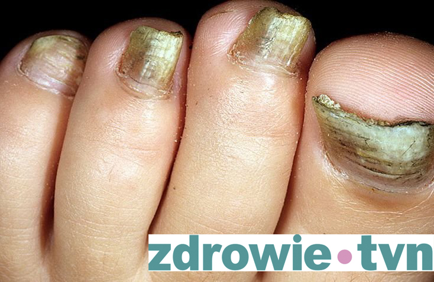
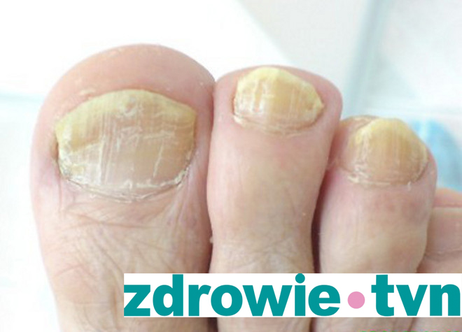
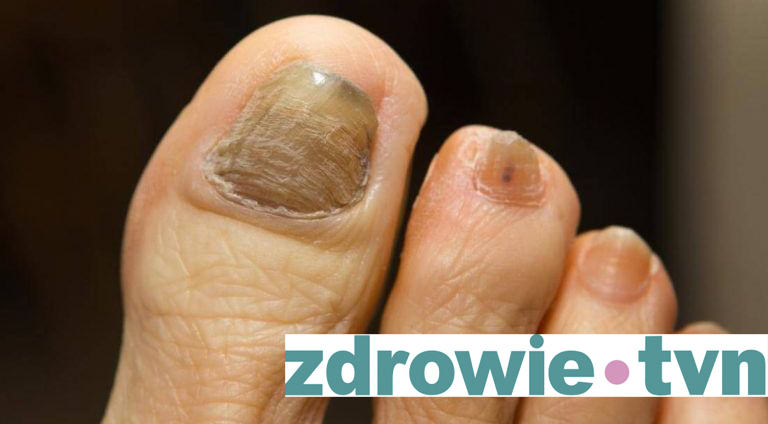

«Pamiętaj raz na zawsze! Choroby grzybicze mogą być leczone niezależnie od stadium choroby! Ważne jest tylko to, aby wiedzieć, jak właściwie ją traktować! I powiem ci o tym....»
Marcin Ambroziak
- specjalista dermatolog-wenerolog
-
gospodarz programu TVN Style „Życie bez wstydu”
- przez wiele lat pracował w
Klinice Dermatologicznej Akademii Medycznej w Warszawie
- jeden z
założycieli Międzynarodowego Centrum Medycyny Anti-Aging, którego celem jest
kształcenie oraz certyfikowanie specjalistów w tej dziedzinie
- od 2000 roku
prowadzi w Warszawie klinikę Ambroziak, a od
roku 2016 roku również szpital w Piasecznie
- jest autorem ponad 50
publikacji poświęconych terapii dermatologicznej
- bierze udział w licznych
badaniach klinicznych nad lekami stosowanymi w dermatologii
- szkoli lekarzy
w kraju i za granicą z zakresu stosowania preparatów kwasu hialuronowego
— Witaj, Marcin . Dziś temat grzybicy stóp i paznokci jest szczególnie ostry, coraz więcej pacjentów zwraca się do specjalistów z tym problemem.
— Witaj, Barbara! Tak, masz rację - według statystyk ponad 40% Polaków jest zarażonych grzybicami stóp i paznokci. Nie wydawałoby się to fatalne, ale.... To tylko na pierwszy rzut oka. Jeśli nie rozpocząć leczenia w odpowiednim czasie, choroba może prowadzić do naprawdę niepożądanych konsekwencji. Grzyb nie wybiera i nie bije wszystkich bez wyjątku. Podczas gdy wcześniej strefa zagrożenia była zamieszkiwana głównie przez osoby w średnim wieku i osoby starsze, dziś nawet dzieci i młodzież są coraz bardziej narażone na zakażenie grzybicą paznokci i grzybicą stóp. Biorąc pod uwagę szybkość rozprzestrzeniania się grzybicy w Polsce, już teraz możliwe jest ogłoszenie nowej epidemii, porównywalnej z rozprzestrzenianiem się plagi w XIV wieku.
— Powiedz mi, jak niebezpieczna jest ta choroba?
— Grzybica stóp i dłoni lub, w przypadku użycia terminologii medycznej, grzybica paznokci jest dość poważnym zagrożeniem dla ludzi. Konsekwencjami choroby są nie tylko poważne swędzenie i zniekształcone paznokcie. Grzyby są alergenami, uwalniają mikotoksyny, które szkodzą prawie całemu organizmowi. Promują one rozwój i komplikują przebieg astmy oskrzelowej, pokrzywki, atopowego zapalenia skóry, alergicznego nieżytu nosa, polipów nosowych, zapalenia spojówek, chorób przewodu pokarmowego, chorób oskrzelowo-płucnych. W przypadku kilku ognisk infekcji grzybiczych spowodowanych obniżoną odpornością i pod wpływem innych czynników uspokajających mogą wystąpić głębokie grzybice, w których grzyby wpływają na ważne organy wewnętrzne - wątrobę, nerki, serce, śledzionę, oczy, mózg.
— Jakie są pierwsze objawy, które należy wziąć pod uwagę? Po tym wszystkim, jak wiesz, wielu ludzi nawet nie wie o obecności chorób grzybiczych w ich pierwszych etapach.
— Przede wszystkim grzybica paznokci przejawia się nieprzyjemnym zapachem. Jeśli zacząłeś zauważać, że twoje stopy podejrzanie często zaczęły wydzielać nieprzyjemny zapach (z terminową zmianą skarpetek i właściwą higieną), to jest to powód do zastanowienia się nad tym. Najczęściej choroba zaczyna się od porażki fałdów interferencyjnych stopy: tutaj są pęknięcia, zaczyna się peeling, skóra zmienia kolor na czerwony, pojawia się swędzenie. Po jakimś czasie grzyb jest przenoszony na płytkę paznokcia: składa się z keratyny i stanowi dla niej doskonałe podłoże do rozmnażania.
Następnym objawem grzyba jest przebarwienie płytki paznokcia. Paznokieć jest uszkodzony, częściej na krawędziach. Powierzchnia paznokcia staje się nierówna, szorstka. Pojawiają się małe rowki i żółtawe plamy, które z czasem zaczynają się powiększać.
Jeśli wowczas nie rozpocząć leczenie,, płyta będzie nadal deformować się, a grzybek uszkodzi nowe obszary paznokci aż do momentu pełnego ich zakażenia.
Poza tym, zazwyczaj masz ból w palcach, kiedy chodzisz. Szczególnie bolesne uczucia ujawniają się podczas noszenia butów uciskowych. To znaczy, organizm sygnalizuje nam w każdy sposób, że coś idzie nie tak! Musimy tylko być w stanie rozpoznać te sygnały i nie opóźniać leczenia.
— Myślę, że nasi czytelnicy będą zainteresowani tym, jakie są dzisiejsze sposoby leczenia grzybicy...
— Jeśli mówimy o klasycznym leczeniu, które jest obecnie oferowane w szpitalach - zakażone paznokcie są po prostu usuwane chirurgicznie, po czym pacjent wraca do zdrowia w ciągu 1-2 miesięcy. Moim zdaniem jest to dość barbarzyńska metoda na XXI wiek. Ale to jest dokładnie to, co oferują lekarze w 99% przypadków. Chociaż dzisiaj istnieją inne, znacznie bardziej komfortowe opcje leczenia grzybicy paznokci, które staramy się wdrożyć w systemie klinik publicznych w jak największym stopniu.
Komercyjne centra specjalistyczne już dziś oferują swoim pacjentom różne sposoby usuwania grzybów na paznokciach. Główną wadą w ich przypadku jest koszt. Koszt procedur usuwania grzybów wynosi 1,5-2 tysięcy złotych, co oczywiście nie jest przystępne dla każdego.
Ważne jest, aby wiedzieć, że aby wyleczyć grzybicę nóg, konieczne jest zabicie jej zarodników i powstrzymanie rozprzestrzeniania się grzybóww w organizmie.
Do niedawna nie było żadnych leków, które mogłyby to zrobić. Wszystkie produkty grzybowe były tylko tymczasowymi efektami kosmetycznymi. Dopiero w 2014 roku na rynek trafił rewolucyjny lek o nazwie «». Jest to krem przeciwgrzybiczy z wyciągiem z piżma bobrowego i różnymi olejami. Jest to wspólny rozwój szwajcarskich naukowców wraz z najlepszymi praktykami z Polski, który nie ma odpowiedników w świecie. Około 10.000 godzin badań poświęcono na produkcję tego produktu. W tym czasie naukowcy przetestowali wiele receptur, zanim podjęli decyzję o leczniczych właściwościach ekstrakcji piżma bobrowego. To jest lek, który mogę bezpiecznie polecić naszym czytelnikom.
— - Niewiarygodne! A jak działa ten cudowny krem?
— Nie ma tu cudu, czysta nauka. "" całkowicie eliminuje zarodniki grzybów, tzn. pozbawia je możliwości rozmnażania. Dzięki kształtowi, krem łatwo przenika przez kanały paznokci do zmiany chorobowej i całkowicie usuwa grzybicę w ciągu dwuch miesięcy.
Chciałbym zauważyć, że oprócz Polski i Szwajcarii, lek "" został poddany pełnym badaniom klinicznym w Instytucie Dermatologii w Paryżu, co potwierdziło jego skuteczność. A teraz proces certyfikacji jest zakończony w Stanach Zjednoczonych i Chinach, gdzie, według wstępnych danych, wykazał również doskonałe wyniki.
— Myślę, że wiele osób zapyta: gdzie mogę kupić krem przeciwgrzybiczy ?
— Zaraz ci powiem - nie znajdziesz tego leku w sieciach aptek!
— Co to ma wspólnego z czymkolwiek?
— Faktem jest, że producent nie zgadza się z polityką cenową polskich farmaceutów! Łańcuchy apteczne wprowadzają takie podwyżki cen, że po prostu nie mieszczą się w głowie. Przy okazji, chcieli sprzedać 3-4 razy droższy. Producent nalega na przystępną cenę dla zwykłych Polaków.
Ale chciałbym również zwrócić Państwa uwagę na fakt, że ostatnio "" otrzymał zezwolenie na udział w państwowym programie zwalczania grzybów w Polsce. W ramach tego państwowego programu Polacy mogą kupić krem przeciwgrzybiczy «» w specjalnej cenie z rabatem 50%!
— To naprawdę wspaniale! Myślę, że nasi czytelnicy będą zainteresowani wiedzą, jak uczestniczyć w tym programie? Czy ktokolwiek może to zrobić?
— Tak, absolutnie każda osoba, która mieszka w Polsce. Po uzgodnieniu wszystkich szczegółów z Ministerstwem Zdrowia podjęto decyzję o przeprowadzeniu wdrożenia za pośrednictwem naszej strony internetowej. Mówiąc w przybliżeniu, wystarczy zostawić imię i telefon, wtedy konsultanci skontaktują się z Tobą i podadzą wszystkie dane, odpowiadając jednocześnie na interesujące pytania. Wszystko jest zorganizowane inteligentnie, proste i zrozumiałe. Dostawa realizowana jest przez firmę InPost. A co bardzo ważne - płatność dokonywana jest dopiero po otrzymaniu towaru. To znaczy, jest zrobione dla ludzi, a nie dla kleszcza. Żeby było to wygodne nawet dla tych, którzy nigdy nie zamawiali niczego z Internetu.
— Jak długo będzie trwał program? Czy kupno kremu po upływie terminu nie będzie możliwe?
— Absolutnie tak. Okres trwania programu państwowego to dokładnie jeden miesiąc! Do tego czasu musisz zostawić zgłoszenie stronie internetowej. O ile wiem, w programie uczestniczyło już ponad 25 tysięcy osób.
— Tak, to imponująca liczba! Cóż, dziękuję bardzo za wywiad Marcinie! Może chcesz powiedzieć coś jeszcze naszym czytelnikom, zanim się pożegnamy?
— Tak, oczywiście. Podsumowując, chcę podkreślić, że dużo łatwiej jest pozbyć się problemu z grzybami w odpowiednim czasie, niż walczyć z komplikacjami. Z wyjątkiem ciebie, nikt nie będzie dbał o twoje zdrowie. Więc warto w to wątpić? Nie wierzcie mi jednak na słowo. Wystarczy spróbować środków przeciwko grzybom innych producentów. Ale jestem przekonany, że w jego skuteczności nie znajdziecie niczego, nawet zdalnie podobnego do "". Życzę wszystkim dobrego zdrowia i pewności siebie! Przecież dla tych, którzy upierają się przy dążeniu do celu, nie ma nic niemożliwego!
Barbara Mazurkiewicz
Z redakcji:
Przypominamy, że program państwowy, o którym
mówił Marcin Ambroziak, odbywa się w ciągu 1 miesiąca i pozwala zamówić
krem przeciwgrzybiczy "" z rabatem 50%.
Możesz zostawić zgłoszenie na naszej stronie internetowej.
Z całym szacunkiem, Marcin.
Z całym szacunkiem, Marcin.
Z całym szacunkiem, Marcin.